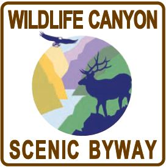

Herds of elk numbering near one hundred are not an unusual sight
along the Wildlife Canyon Scenic Byway, especially near the Danskin
river access. Along with elk are mule deer, whitetail deer, chukars,
wild turkeys, eagles, ospreys, cougars, bears, and wolves.
Several campgrounds along the byway have natural hot springs for
visitors to enjoy, as well as several trails for hiking and biking.
Fishing and rafting are also enjoyable activities afforded along the
route. In winter months, summer hiking trails provide miles of snowmobile and skiing adventure.
You will also find motels, bed and breakfasts, a musical theatre, and
even a golf course. Wildlife Canyon Scenic Byway joins two other
scenic byways, forming a one-day drive from Boise. It can be accessed
either by the Ponderosa Pine Scenic Byway on Idaho 21 or by the
Payette River Scenic Byway on Idaho 55. Either route connects with
this 33-mile trip through some of the most powerful canyon scenery
offered in the state. A one day trip from Boise affords visitors a
glimpse of the pioneering spirit of early Idaho and the awesome
beauty of Idaho's wildlife and whitewater.